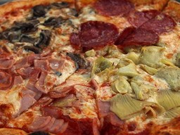
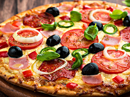
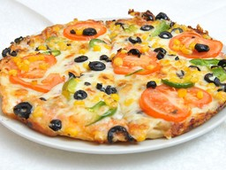
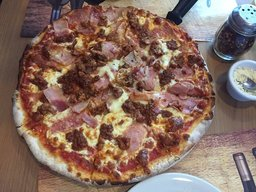
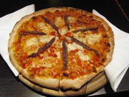
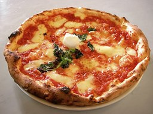
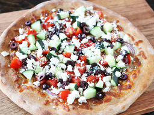
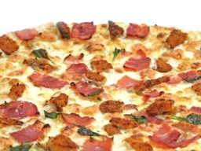

Las Pizzas
Todas la pizzas incluyen una base de salsa de tomate casera y queso mozarella
- Todas
- Vegetariana
- Homnivora
- Bianca

Si en verano soy cigarra y de septiembre a mayo hormiga, no te apures madre mía, que ha de irme bien la vida.
Quatro Estaciones
¼ de pepperoni, ¼ de jamón cocido ahumado, ¼ de carne, ¼ choricillo

Más vale pan con amor, que gallina con dolor.
Espanola
Pimentón verde, chorizo, salame y oregano

Llegará un tiempo en que los seres humanos se contentarán con una alimentación vegetal y se considerará la matanza de un animal como un crimen, igual que el asesinato de un ser humano. Verdaderamente el hombre es el rey de las bestias, pues su brutalidad sobrepasa la de aquellas. (Leonardo Da Vinci)
Vegetariana
Tomate, champiñones, choclo, aceitunas y un toque de orégano

Carne que se lleva el gato, no vuelve al plato.
Carnivora
¼ de pepperoni, ¼ de jamón cocido ahumado, ¼ de carne y ¼ choricillo

La pizza napoletana non ha inventori, non ha padri, non ha padroni, ma è il frutto della genialità del popolo napoletano
Napolitana
Anchoa, tomate y orégano

Una diffusa credenza vuole che nel giugno 1889, per onorare la regina d'Italia, Margherita di Savoia, il cuoco Raffaele Esposito della pizzeria Brandi creò la pizza Margherita, dove i condimenti, pomodoro, mozzarella e basilico, rappresentavano la bandiera italiana. S
Margarita
Albahaca fresca

El pan pita es un tipo de pan plano blando, levemente fermentado, de harina de trigo, de consumo en el Mediterráneo oriental, especialmente en el Cercano Oriente, ocasionalmente cocido en las paredes del horno y que recuerda a la corteza de la pizza.
Griega
Feta, tomate, aceituna, aceite

Lo que hace que la humanidad sea hermosa es nuestro libre albedrío, nuestra individualidad, nuestro esfuerzo continuado, pese a nuestra imperfección. (Dean Koontz)
Tu gusto
4 ingredientes a elección
Elige tus ingredientes: choricillo, jamón cocido ahumado, aceitunas, choclo, champinones, champiñones, carne molida (?), pimentón, salame...